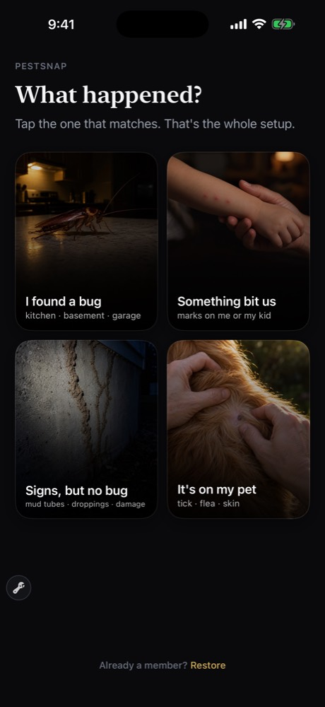
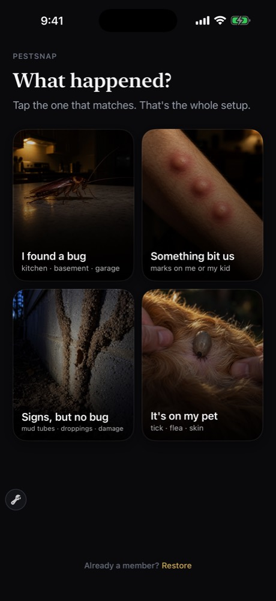
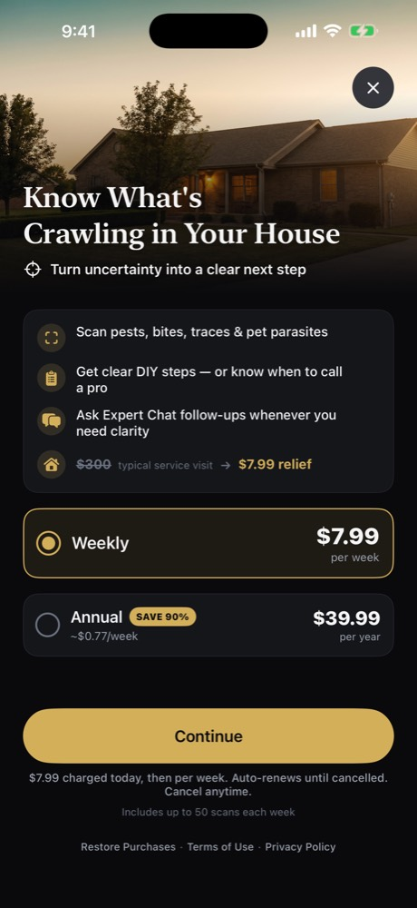
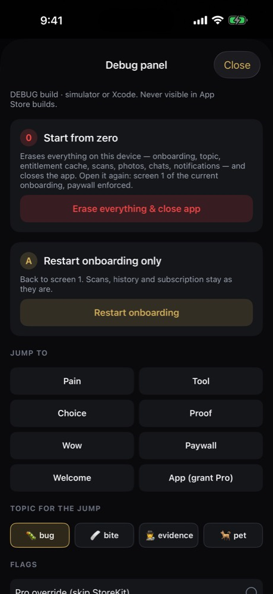

Продуктовый справочник V2 · ветка love8ko/sprint · 20 сентября 2026
Нашли жука? Узнайте, что это, что сделать сегодня вечером — и ушло ли оно через неделю.
Человек открывает App Store в 23:47 с проблемой в руках: жук на кухне, три укуса в ряд, земляные трубки на фундаменте, клещ в шерсти. V1.8 продавала определение вида. Определение вида — товар: бесплатный Google Lens делает то же самое, а Picture Insect продаёт его как науку, без единого действия для домовладельца. V2 продаёт то, что происходит после определения: что сделать сегодня, что проверить через 48 часов, кому звонить и во сколько это обойдётся.
База спринта — v1.8 (build 21, коммит bc0a7ad), V2-коммит cb84694. Формулировка выше — рабочее обещание V2 (кандидат A, SPRINT_V2.md §2); это гипотеза спринта, а не проверенный слоган.
Одного обещания на всех не существует. Jev-панель 1 дала по общей выборке почти ровный расклад: безопасность 0.25 · план избавления 0.20 · определение вида 0.20 · запись дома 0.15 · деньги 0.10 · «звонить ли профи» 0.10. Но по когортам разброс огромный: родитель — безопасность 0.81, арендатор — запись для хозяина 0.48, домовладелец — план 0.26, человек из поиска — просто ID 0.39. Поэтому обещание в V2 меняется вместе с плиткой, по которой человек тапнул, — и весь онбординг с пейволом устроен вокруг этого одного тапа.
Что здесь данные, а что оценка.Jev — 24 синтетических человека (homeowner 8 · renter 5 · parent 4 · petowner 4 · generic 3) × 2 прохода с реверсом порядка вариантов, шум ≈ ±0.05. Это модель здравого смысла, а не интервью с людьми. Fable — 4 персонажа-тестера, каждому показали только четыре экрана его темы. Реальных данных почти нет: последний зафиксированный снимок — май 2026 (43 загрузки, 1 триал); выгрузок RevenueCat / PostHog за v1.5–1.8 в репозитории нет. Все доли аудитории ниже — оценки до запуска, а не данные о плательщиках.
Аудитория
Пять когорт — это жизненные ситуации, а не рекламные сегменты; один человек бывает сразу двумя (родитель-домовладелец). Доли — оценка доли выручки V1 из PERSONAS.md (апрель 2026), не данные о плательщиках. Числа в карточках: Jev-панели 1–3 от 19 сентября, оценки Fable 1–5 от 20 сентября.
Домовладелец · S1
Mark · 30–55, пригород
«Это один залётный или их уже сотня за шкафом?»
Когда
23:47, жук пробежал по кухне; сосед сказал «у нас термиты».
Боль
«Что это вообще такое» 0.44 — сильнейшая в когорте.
Первая победа
Свой скан → светофор → что сделать сегодня вечером (первый буллет пейвола «что делать сегодня» 0.42).
Вернётся ради
Дело-трекер 0.26 · «звонить ли профи» 0.24 · план действий 0.23.
Платит за
Триал 2.98 / 5, продление 1.03, годовая 1.15.
Fable
Полезно 4 · куплю сейчас 3 · плачу через 4 недели 1 · годовая 2.
Оценка доли выручки V1: ~55% (PERSONAS.md, до запуска). Честная длина потребности: 3–7 дней остро, 4–8 недель на тараканов и муравьёв; 2–4 эпизода в год.
Арендатор · S2
Jordan · 25–35, город
«Мне нужно доказательство, которое примет хозяин квартиры.»
Когда
Утро, три укуса в ряд; «bed bug identifier» в 7:42.
Боль
«Что это» 0.41и «нет доказательства для хозяина» 0.41 — единственная когорта с двумя равными болями.
Первая победа
Честный ответ про укус + что проверить в пяти местах сегодня.
Вернётся ради
Запись дома с PDF 0.66 — сильнейший рычаг продления во всём исследовании.
Платит за
Триал 2.93 / 5, продление 1.28, годовая 1.04. Первый буллет пейвола — запись для хозяина 0.57.
Fable
Полезно 4 · куплю сейчас 2 · через 4 недели 1 · годовая 2.
Оценка доли выручки V1: ~20%. Единственная по-настоящему длинная потребность: клопы — 8–14 недель, спор с хозяином 1–4 месяца.
Родитель · S3
Sarah · 30–45
«Это опасно для ребёнка? Ехать в приёмный покой?»
Когда
Ребёнок пришёл с площадки с красным пятном, 17:00.
Боль
«Опасно ли для детей» 0.58 — самая высокая единичная боль в исследовании.
Первая победа
Признаки «звонить врачу сегодня», сверенные с её фото (Fable: «сделало за десять секунд то, ради чего я скачала приложение»).
Jev-панель 1: у каждого человека спрашивали, какая боль сильнее всего и за решение какой он заплатит. Числа — доли выбора (0–1) по всей выборке из 24 человек × 2 прохода. Этот порядок задаёт первые экраны и первые три скриншота App Store.
#
Боль словами пользователя
JTBD
Сильнее всего
Заплатят
Пик по когорте
Чем закрываем
1
«Что это вообще такое»
Назвать то, что держишь в руках, и понять, что это значит для дома
частично Статичный список «звонить врачу сегодня» + Emergency Strip; наблюдения 48 ч ещё нет
4
«Нет доказательства для хозяина квартиры или эксперта»
Собрать датированную запись, которую примут
0.10
0.12
renter 0.41
не сделано Home pest record + PDF — рычаг продления №3
5
«Одиночка или уже заселение»
Оценить масштаб, не вызывая профи
0.09
0.11
homeowner
частично Двухминутная проверка под раковиной в плане; счёта ловушек нет
6
«Ушло ли оно через неделю»
Убедиться, что сработало
0.01
—
—
не сделано Парадокс: как боль — почти ноль, как причина платить дальше — первое место (см. «Продление»)
7
«Стыдно» · «медленные ответы на Reddit»
—
0.00
0.00
—
не продаём Из копирайта убрать: это наша гипотеза, а не их боль
Главный перекос. Боль №1 («что это») — 0.44 и 0.28 готовности платить, то есть почти вдвое больше всех остальных. Но именно она хуже всего держит подписку: как фича «мгновенный ID + светофор» даёт 0.38 на старт триала и 0.08 на продление. Триал продаёт определение, деньги на второй неделе держат совсем другие вещи. Это две разные линии копирайтинга и два разных экрана.
Источник: research/audience-jev-2026-09-19/FINDINGS.md, разделы «Боль» и «Фичи».
Что показал Jev
Три панели 19 сентября, одна и та же выборка: 24 синтетических человека × 2 прохода с обратным порядком вариантов, шум ≈ ±0.05. Варианты описывались честно по усилиям (сколько тапов, секунд, нужен ли ввод или камера). Сырые данные — research/audience-jev-2026-09-19/, research/onboarding-jev-2026-09-19/, research/paywall-jev-2026-09-19/.
Панель 1 · аудитория, обещание, фичи
Вопрос
Победитель
Против кого
Что мы с этим сделали
Какое обещание заставит скачать и начать триал
Безопасность 0.25
План 0.20 · ID 0.20 · запись дома 0.15 · деньги 0.10 · профи 0.10. По когортам: parent 0.81 безопасность, renter 0.48 запись, homeowner 0.26 план, generic 0.39 ID
Отказались от одного слогана: заголовок пейвола и три буллета меняются по выбранной теме (TopicContent.swift)
Что продаёт триал
Мгновенный ID + светофор 0.38
Наблюдение за укусом 0.16 · запись дома 0.13 · «что делать сегодня» 0.11 · дело-трекер 0.04
До цены показываем именно результат — вид, светофор, полоса уверенности
Что держит продление
Дело-трекер «ушло ли» 0.20
Наблюдение 0.19 (parent 0.68) · запись дома 0.17 (renter 0.66) · план 0.12 · профи 0.10 · ID всего 0.08
Три рычага утверждены к постройке, ни один ещё не построен (раздел «Продление»)
Сезонная проверка дома
—
0.04 на продление (generic 0.32)
В бэклог. Голос «правды жизни»: никто не обходит дом по собственной воле ради приложения
Чат с «экспертом» как отдельная ценность
—
Триал 0.01 · продление 0.04 · первый буллет пейвола 0.00
Чат перестал быть витриной: он живёт внутри результата как вопрос про этот случай
Библиотека вредителей
—
0.01 / 0.01
Не строим
Панель 1 · оценки по когортам, 1–5
Когорта
Начнёт триал
Возьмёт годовую
Продолжит платить
Вернётся на D1
Мешают бесплатные альтернативы
homeowner
2.98
1.15
1.03
2.55
2.34
renter
2.93
1.04
1.28
2.79
2.06
parent
3.37
0.97
1.32
2.59
1.91
petowner
2.85
0.94
1.15
2.29
2.31
generic
1.92
1.26
0.67
1.27
2.97
Панель 2 · онбординг
Вопрос
Победитель
Против кого
Что мы с этим сделали
Структура онбординга
REAL SCAN — тап темы → снять свой объект → свой настоящий вердикт, шаги и чат за пейволом 0.72
Пример по её теме 0.14 · 4 визуальных экрана 0.13 · 2 экрана 0.01 · текущие 5 экранов с фейковым демо 0.00 · квиз 0.00
Построен промежуточный вариант: тап темы → её ситуация → пример результата, помеченный «AN EXAMPLE», → пейвол. Настоящий скан до цены — открытое решение владельца
Камера до цены раздражает?
Раздражение 1.96–2.42 из 5 (умеренное) против прироста готовности платить 2.67–3.19
Портфельное правило «никакой камеры до цены» для PestSnap не переносится: человек держит проблему в руках
Все ассеты — реалистичная фотография. Для укуса сделаны две версии, детская и взрослая; выбор — один тап «Кого укусили»
Квиз про дом после оплаты
—
parent 2.62 из 5, остальные 1.92–2.09
Гипотеза владельца подтвердилась слабо: делаем только если ответы реально меняют советы, максимум 3 вопроса, пропускаемый. Пока не строим
Панель 3 · пейвол
Блок
Победитель
Против кого
Что мы с этим сделали
Герой
Её собственный результат0.70 (по когортам 0.57–0.79)
Пример по её теме 0.24 · фото желаемого результата 0.02 · фото вредителя 0.02 · сетка 4 режимов 0.01 · мокап 0.01
Стоковый «дом на закате» (paywall-hero) удалён, вместо него карточка результата: фото, вид, светофор, полоса уверенности
Буллеты
«Что сделать сегодня» 0.32
ID за 3 с 0.16 · запись/PDF 0.12 · звонить профи 0.12 · опасность для детей 0.10 · якорь экономии 0.08 · чат 0.00. Первый буллет по когортам: homeowner 0.42 шаги · renter 0.57 запись · parent 0.51 опасность · petowner 0.56 шаги · generic 0.35 ID
Три буллета, первый — боль когорты; набор меняется по теме и по ответу «ребёнок или взрослый»
Цена
Зачёркнутые $300 0.36
«$0.00 today» + дата первого списания 0.32 · «≈$0.77/нед» 0.13 · просто тарифы 0.10 · «$1.15 в день» 0.07 · SAVE 90% 0.01 · BEST VALUE 0.01
Победителя голосования не взяли. Доверие к зачёркнутым $300 — всего 2.21–2.37 из 5, а голос compliance назвал это недоказанным утверждением об экономии. Первой строкой идёт «$0.00 today · first payment {дата}», сравнение с визитом профи — одной серой строкой и только там, где это его счёт
Кнопка
«See what it is» 0.52
«Try free for 7 days» 0.28 · «Start my 7-day free trial» 0.13 · «Protect my home» 0.04 · «Continue» 0.03 · «Unlock unlimited scans» 0.00
CTA — глагол ценности и меняется по теме: «See what to do tonight» / «See what to do now»
Под кнопкой
«No charge today. Cancel anytime in Settings.» 0.60
«Cancel in two taps» 0.20 · приватность 0.08 · возврат 0.08 · напоминание за 2 дня 0.02
Эта строка стоит под кнопкой дословно — но появляется только при подтверждённой праве на триал, иначе честное «$7.99 charged today»
Когорта · оценки пейвола 1–5
Доверие к зачёркнутым $300
«Weekly по умолчанию — правильно»
Лимит 50 сканов ок
Начнёт триал
homeowner
2.21
2.33
2.23
1.92
renter
2.37
2.59
2.38
1.96
parent
2.32
2.72
2.49
2.22
petowner
2.28
2.56
2.25
1.81
generic
2.24
1.56
1.98
0.85
Самое полезное число панели 3. «Начнёт триал» на пейволе — 1.8–2.2, а в панели 1, где триал предлагался после понимания ценности, — 2.9–3.4. Цена без её результата на экране проседает примерно на балл. Это отдельный аргумент за настоящий скан до пейвола, а не только за красивую карточку-пример.
Что сказали когорты Fable
20 сентября. Четыре персонажа-тестера, каждому показали только четыре экрана его темы (плитки → экран ситуации → пример результата → пейвол) из research/flow-v2-2026-09-20/. Спрашивали: что понял, что с фотографиями, что с примером результата, оценки 1–5, чего не хватает, что удалить.
Урок процесса, который важнее любой оценки. Первая съёмка была сломана: все 13 файлов оказались одним и тем же кадром — в цикле захвата координаты плиток не передавались в тап-инструмент. Все четыре тестера заметили это независимо друг от друга и отказались проводить ревью. Пересняли с проверкой контрольных сумм. Правило для набора инструментов: перед каждым раундом ревью выполнять md5 *.png | sort | uniq -c.
Персонаж
Полезно
Куплю сейчас
Буду платить через 4 недели
Годовая
Mark · домовладелец, таракан
4
3
1
2
Jordan · арендатор, укусы
4
2
1
2
Sarah · родитель, укус ребёнка
4
3
1
1
Dave · владелец собаки, клещ
3
2
1
2
Форма ровно та же, что у Jev: продукт читается полезным, цена переносимая, а у подписки нет работы после того, как проблема решена. Все четверо сказали «отменю в понедельник».
В чём сошлись все четверо
1 · Экран ситуации ничего не зарабатывает
«Удалите экран боли. Плитка уже сказала „я нашёл жука“… идите от плитки сразу к примеру результата. Тогда фраза „вот и вся настройка“ станет правдой.»Mark, домовладелец
Sarah читает его текст как написанный для кого-то другого.
2 · Пример результата — лучший экран в приложении
«Первое приложение про жуков, которое сказало мне, что делать.»Mark
«„Позвоните врачу сегодня“ за десять секунд сделало то, ради чего я скачала приложение.»Sarah, родитель
3 · Пейвол повторяет предыдущий экран
Его кнопка обещает то, что человек уже увидел. Пейвол обязан продавать то, что за ним: разбор её собственного фото, датированную запись, наблюдение.
4 · Недельная подписка со списанием сегодня читается как ловушка
«Я забуду отменить и буду в бешенстве.»Sarah
«Сделать дорогой вариант выбранным по умолчанию — это то, из-за чего я перестаю доверять всему, что написано выше.»Dave, владелец собаки
Прямой ответ — 7-дневный триал, уже утверждённый владельцем; его не видно только потому, что introductory offer в App Store Connect удалён.
5 · Две фотографии не читаются в размере плитки
Плитка «улики» — «выглядит как грязная стена или потёк» (Mark, Sarah). Плитка «питомец» — «клещ размером с точку в конце предложения» (Dave, Jordan). Ночная кухня — «настолько недоэкспонирована, что читается как сломанная, а не как атмосферная» (Mark).
Что каждый назвал причиной остаться
Jordan — запись для хозяина квартиры. Dave — журнал по каждой собаке и сезонные напоминания. Mark — обещание второй волны на 14–28 день и двухминутная проверка на заселение. Sarah — признаки «к врачу», сверенные с её собственным фото.
Дословно, по когортам
Кто
Что сказал
Что из этого следует
Mark домовладелец
«Один, увиденный при дневном свете, обычно означает, что их много» — неверно для его случая в 23:47. Хочет, чтобы вопрос заселения был проверкой, которую он сделает за две минуты: «посветить фонариком под раковину; крупинки как молотый перец — значит колония». Хочет знать, что будет, когда его фото окажется размытым, а не идеальным примером.
Копию исправили на «one seen at all»; в план добавлен шаг «Check now · 2 min»; на пейволе появилась строка, что нечитаемое фото не тратит скан
Jordan арендатор
Честность про укусы повышает доверие: «любой, кто по фото обещает 100% клопов, врёт, чтобы мне что-то продать». Но дальше: «приложение должно признать, что скан — не продукт; продукт — чеклист и запись». Запись для хозяина — единственная строка, которая почти конвертирует: нужны фото с отметкой времени, формулировка ИИ, дата первого обнаружения, сравнение через 48 часов, что нашли в пяти местах, PDF в один тап. «Если бы на пейволе показали миниатюру этого документа, моё „куплю сейчас“ стало бы 4.» И: «$300 за визит — это счёт домовладельца, а не арендатора».
Строка про $300 убрана у тем «укус» и «питомец»; запись дома поднята в рычаги продления №3 (но ещё не построена)
Sarah родитель
Две вещи, из-за которых она разозлится после оплаты: повторное списание в следующий вторник и «заплатить и получить тот же текст „не могу определить, проверьте матрас“, который я уже видела бесплатно». Шаги про клопов неверны для укуса на площадке — детский путь должен менять проверки, а не только фотографию. «До 50 сканов в неделю» говорит ей, что приложение не для неё. $300 за визит — вообще не тот счёт, когда решаешь про приёмный покой.
Детский путь получил уличные проверки вместо проверки матраса; строка про $300 у темы «укус» убрана; вопрос про показ лимита сканов остался открытым
Dave владелец собаки
Платил бы весь клещевой сезон только за: журнал по каждой собаке (дата, фото, место на теле, где гуляли), напоминание на 30 дней с собачьими симптомами, оценку набухания и времени прикрепления по фото («вот что решает, ехать ли к ветеринару»), региональный контекст болезней (в Северной Каролине это эрлихиоз и пятнистая лихорадка, а не Лайм) и выгрузку для ветеринара. «Разовое определение — это гугл за $0.»
Подтверждает рычаг «наблюдение» и опровергает старую строку PERSONAS про «Lone Star Tick → 30% риск Лайма» — фактическая ошибка, её убираем
Источник: research/fable-r1-2026-09-20/FINDINGS.md. Годовая у Mark выросла бы с 2 до 4 «одной строкой о том, что она покрывает и клещевой сезон» — это гипотеза тестера, не измерение.
Что уже сделано в V2
Коммит cb84694 плюс правки по итогам Fable. Всё перечисленное собирается и снято в симуляторе; экран за экраном — на странице Экраны V2.
Зона
Было в 1.8
Стало в V2
Статус
Онбординг
5 экранов: тёмный таракан → 4 режима → «что вас привело» → отзывы → фейковое демо-сканирование с зашитым вердиктом
Плитки «What happened?» → её ситуация → пример результата с планом → пейвол по теме. Тема живёт в @AppStorage и доходит до пейвола
в сборке
Выдуманные отзывы
Цитаты со ссылкой на «NPMA 2024 survey», включая «Сканировала укус ребёнка. Обошлись без приёмного покоя»
Удалены целиком
удалено риск 2.3.1 и FTC 16 CFR 465 снят
Пейвол
Стоковый дом на закате, «Know What's Crawling in Your House», $300 → $7.99, SAVE 90%, ~$0.77/нед, кнопка «Continue»
PaywallV2View: карточка результата героем, 3 буллета с болью когорты первой строкой, «$0.00 today · first payment {дата}» при подтверждённом праве на триал, Weekly предвыбран, Yearly без бейджа, CTA-глагол по теме, «No charge today. Cancel anytime in Settings.»
в сборке
Голос чата
«Dr. Elena Cruz, Entomologist» и ещё трое выдуманных специалистов с портретами; в системном промпте — «NEVER say you are an AI»
Один безымянный голос: «PestSnap Guide · AI · not an exterminator, doctor or vet» и построчный дисклеймер под каждым ответом
сделано в рабочем дереве, ещё не в коммите
Честность оценки
«94% match» / «73% confidence»
Три полосы: Confident match · Narrowed to a group · Can't tell from this photo
в сборке
Отладочный стенд
Нет
DebugPanelView + DebugReset: «0 — Start from zero» (стирает всё и закрывает приложение), «A — Restart onboarding only», переходы на любой экран, выбор темы для перехода, флаги «Pro override», «Force paywall», «Hide floating key» для чистых скриншотов. Вызов — плавающий ключ, только DEBUG-сборка
в сборке
Сборка и аналитика
PostHog не был в project.yml, DEBUG-флага не было
Вернули оба; добавлены события onboarding_topic_selected, paywall_viewed{topic,trial_eligible}, purchase_success{tier,is_trial,topic} и другие
частично событий продления и «первой ценности» пока нет
Ассеты
Мультяшные и стоковые картинки, одна фотография укуса на всех
10 фотографий через Codex: 4 плитки, 4 результата, ночная кухня, детская версия укуса. После Fable перегенерированы плитки «улики», «питомец», «укус» и ночная кухня — ради читаемости в размере плитки
сделано
Ассеты до и после раунда Fable

До. Плитка «улики» читается как потёк на стене, клещ на плитке «питомец» почти не виден, укус — детская рука в тёмной комнате.

После. Земляные трубки различимы, клещ в шерсти читается, укус — три чётких следа на руке взрослого; детская версия осталась внутри темы «укус».

Пейвол 1.8. Стоковый дом, зачёркнутые $300, SAVE 90%, «Continue». Каждый из этих четырёх элементов Jev или compliance пометили как утечку доверия.

Стенд. «Start from zero» и переходы по экранам — чтобы каждый раунд ревью снимался с чистого состояния, а не с того, что осталось от прошлого прохода.
Чего в V2 ещё нет. Дело-трекер, запись дома с PDF, наблюдение за укусом и клещом, перестроенная главная, уведомления «по делу», новая навигация Home · My Home · Ask · Settings, 7-дневный триал в App Store Connect. То есть построено всё, что продаёт триал, и ничего из того, что удерживает после него. Это осознанный порядок спринта, но он же и главный риск — следующий раздел.
Главная нерешённая проблема: продление
Две независимые проверки дали один и тот же ответ. Jev: «продолжит платить» 1.03–1.32 из 5 у платящих когорт и 0.67 у человека из поиска. Fable: все четверо поставили 1 на вопрос «буду ли платить через четыре недели» и сказали «отменю в понедельник». Годовая — 0.94–1.26 из 5: прямо сейчас годовую подписку нельзя продать никому.
Причина не в цене и не в дизайне. Потребность эпизодическая: проблема решена — работа подписки закончилась. Это риск бизнес-модели, а не деталь интерфейса.
Три рычага, утверждённых к постройке
#
Рычаг
Продление (Jev)
Пик по когорте
Почему именно он
Статус
1
Дело-трекер «ушло ли» + контроль на 2-й и 7-й день
0.20
homeowner 0.26
Единственный рычаг, который кладёт датированную причину открыть приложение внутрь 7-дневного триала. Отмены кучкуются на 5–6 день, а итог дела «ушло ли» приходится ровно туда
не начат
2
Наблюдение за укусом и клещом — повтор фото через 48 часов, клещ 30 дней
0.19
parent 0.68 · petowner 0.33
Совпадает с реальными часами: 48–72 часа у укуса, 72-часовое окно решения и 30 дней наблюдения у клеща
не начат
3
Запись дома + PDF
0.17
renter 0.66
Jordan: «если бы на пейволе показали миниатюру этого документа, моё „куплю сейчас“ стало бы 4». Единственная длинная потребность в портфеле когорт — спор с хозяином квартиры идёт 1–4 месяца
не начат
Ниже порога: счётчик «видел ещё одного» 0.05 · «звонить ли профи и почём» 0.10 (homeowner 0.24) · сезонная проверка дома 0.04 (generic 0.32).
Четвёртая идея, которой нет в оценках Jev, но которая пережила проверку на правду жизни: обещание второй волны. Обработка от тараканов даёт откат на 14–28 день — из яиц, переживших приманку; у блох то же самое на третьей неделе, из куколок. Люди читают это как провал и в панике вызывают профи за $300. Обещание даётся в момент покупки («тараканы возвращаются примерно на 14–28 день — яйца переживают приманку; мы скажем, когда обработать повторно и как понять, что сработало») и выполняется на 14-й день. Домовладелец принимает списание, потому что это единственное утверждение, которое он может проверить у себя на кухне. Этот текст уже стоит в плане темы «жук» («Day 14–28»), но самого напоминания ещё нет.
Проверка на фантазии — честно. «Сезонный обход дома» — фантазия: никто добровольно не обходит участок ради приложения. «Запись дома / PDF» — наполовину фантазия: в сделках с недвижимостью в США нужна лицензированная инспекция (NPMA-33), у нашей записи юридического веса ноль; реальна она только для арендатора, где вес имеет датированное уведомление, а не название вида. «Дело-трекер» — реальная предпосылка при фантазийной механике: люди возвращаются, когда увидели ещё одного жука, а не из дисциплины; поэтому мерой должен быть счёт клеевых ловушек за $8, а не вопрос «как ощущения».
Поправка к приоритетам. S1-домовладелец как primary для удержания — ошибка: он покупает, но продлевают арендатор (клопы, 8–14 недель) и владелец собаки (сезон апрель–октябрь). Для первой покупки S1 остаётся главным.
Триал — решено 19.09 Возвращаем 7-дневный триал на Weekly $7.99 (предвыбран), Annual $39.99 без триала. Не сделано: introductory offer в App Store Connect ещё не создан заново, поэтому в текущей сборке на пейволе честно показывается «$7.99 today». Слово «free» в интерфейсе появляется только при подтверждённом праве (weeklyTrialAvailable).
Экран ситуации между плитками и примером результата — на решение Fable-раунд единогласно предложил его удалить и идти «плитка → пример результата → пейвол». В коде он пока остался (OnboardingContainer.swift, шаг .pain), потому что на нём же стоит тап «ребёнка или взрослого укусили», который меняет и фотографию, и проверки, и буллеты. Вопрос владельцу: удаляем экран и переносим этот тап в пример результата?
Настоящий скан до цены — на решение Победитель Jev — REAL SCAN 0.72 против 0.14 у примера. Голоса конверсии и compliance тоже за: один бесплатный скан (вид + светофор + честная фраза + экстренные контакты), а план, дело, чат, PDF и вторая попытка — за оплатой; для ревью Apple это снижает риск 2.1. Это отменяет портфельное правило «0 бесплатных сканов». Решение за владельцем.
Годовая подписка — на решение Намерение взять годовую ≈1.0 из 5, поэтому на первом пейволе она стоит тихой второй строкой без бейджей. Предложение: показывать годовую только после доказанной ценности (первое закрытое дело, или начало третьей платной недели, или пройденная сезонная проверка) с формулировкой «год стоит как пять недель». Отдельно: Mark обещает 2 → 4 за одну строку о том, что годовая покрывает и клещевой сезон.
Лимит сканов на пейволе — на решение Сейчас в правовой строке написано «Fair-use limit 50 scans a week» (Constants.weeklyProScanLimit = 50). Sarah: «до 50 сканов в неделю» говорит ей, что приложение не для неё. Убирать строку нельзя — «unlimited» при действующем лимите было бы недостоверным утверждением (3.1.2). Вопрос: поднимать лимит, убирать цифру с пейвола или оставить как есть.
Навигация и первая сессия — решено, не построено Утверждено: Home · My Home · Ask · Settings плюс плавающая строка скана, камера открывается сразу на её теме, «Your case is open» после первого результата. В сборке всё ещё главная от 1.8 («Pest patrol», счётчик найденного, четыре равные плитки) — то есть после оплаты человек попадает на экран, который не знает, зачем он пришёл.
Данные — нет Выгрузок RevenueCat и PostHog за v1.5–1.8 в репозитории нет. Пока весь спринт опирается на Jev, Fable и снимок мая 2026 (43 загрузки, 1 триал). Любая цифра «до / после» в следующем раунде будет по-прежнему синтетической, пока данные не придут.
Фактическая ошибка в старых материалах — исправить Строка «Lone Star Tick → 30% риск Лайма» из PERSONAS.md и JTBD-5 неверна: Amblyomma americanum не переносит боррелиоз. Это риск доверия и ревью; в V2-копии её уже нет, в фоновых документах — ещё есть.
Порядок, в котором это разумно делать: решения 1–3 (они меняют форму воронки) → рычаг продления №1 с дело-трекером внутри триала → первая сессия и главная → запись дома и наблюдение → уведомления по датам → повторный раунд Fable и Jev «до / после» на тех же вопросах.
Откуда взяты числа
Файл
Что оттуда
SPRINT_V2.md
Аудит кода 1.8, рабочее обещание, решения владельца §9, порядок фаз
research/audience-jev-2026-09-19/FINDINGS.md
Боли, обещания, фичи (триал / продление), оценки когорт 1–5
research/onboarding-jev-2026-09-19/FINDINGS.md
Структуры онбординга, первый экран, что увидеть до цены, чат, иллюстрации, квиз
research/paywall-jev-2026-09-19/FINDINGS.md
Герой, буллеты, формат цены, CTA, строка под кнопкой, оценки пейвола
research/fable-r1-2026-09-20/FINDINGS.md
Четыре тестера, оценки 1–5, дословные цитаты, сломанная съёмка, принятые правки
docs/consilium-2026-09-19/voice-*.md
Дизайн (иерархия, Liquid Glass), конверсия (воронка, спец пейвола, рычаги), compliance (что не может уйти в релиз), правда жизни (сроки, режимы, «где мы врём»)
PERSONAS.md · COMPETITORS.md · DECISIONS.md
Оценки долей выручки, сегменты, история решений по цене и структуре